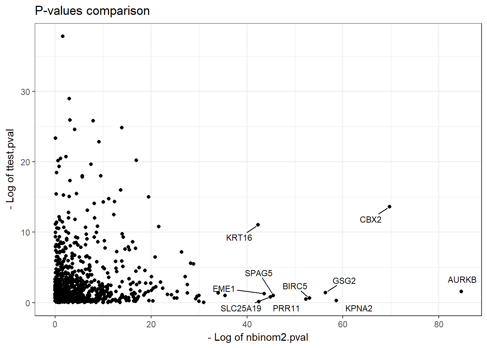

MLExpResso: differential expression and methylation analysis
Case study using RTCGA data
Aleksandra Dąbrowska, Alicja Gosiewska
Introduction
The following guide presents the effect of the MLExpResso package on the analysis of changes in expression and methylation of the human genome.
Scientists believe that the result of increased methylation is decreased gene expression. Recent studies suggest that the relationship between methylation and expression is more complex than we previously thought.
MLExpResso is an R package for integrative analyses and visualization of gene expression and DNA methylation data.
Key functions of this package are:
Identification of genes with affected expression,
Identification of DMR - differentially methylated regions,
Identification of regions with changes in expression and methylation,
Visualization of identified regions.
For both, methylation and expression data, we conduct some statistical tests and present graphically received results. The joint modeling and visualization of genes expression and methylation improve interpretability of identified signals.
The methodology is supplemented with example applications to The Cancer Genome Atlas data.
Standard Workflow
In this vignette we will work with the data sets containing information about gene expression and methylation for patients with breast cancer. We will analyze differences in methylation and expression for patients with different subtypes of BRCA cancer. To run the examples below you should install MLExpRessoData package (https://github.com/geneticsMiNIng/MLGenSigdata). Data sets in this R package are based on the Bioconductor package RTCGA (https://bioconductor.org/packages/release/bioc/html/RTCGA.html).
library(MLExpResso)
library(MLExpRessoData)Identification genes with affected expression
BRCA_exp
Package MLExpRessoData contains BRCA_exp dataset. This set contains information about gene expression: read counts per-gene, computed for genes for 736 patients with breast cancer. Rows of this data set correspond to samples taken from patients. First column SUBTYPE corresponds to a subtype of BRCA cancer, next columns correspond to genes.
BRCA_exp[1:5, 1:5]## SUBTYPE AANAT AARSD1 AATF AATK
## TCGA-A1-A0SB-01A-11R-A144-07 Normal 9 2354 2870 317
## TCGA-A1-A0SD-01A-11R-A115-07 LumA 2 1846 5656 312
## TCGA-A1-A0SE-01A-11R-A084-07 LumA 11 3391 9522 736
## TCGA-A1-A0SF-01A-11R-A144-07 LumA 0 2169 4625 169
## TCGA-A1-A0SG-01A-11R-A144-07 LumA 1 2273 3473 92Before we go to the testing, we need to define condition values for each sample. We would like to test for differences between LumA subtype and other subtypes of breast cancer, so we create a vector, which each element corresponds to a sample. Our division into this two groups relies on numbers of occurences of each subtype. The LumA subtype is the most common, in case of breast cancer.
condition_exp <- ifelse(BRCA_exp$SUBTYPE == "LumA", "LumA", "other")
head(condition_exp, 8)## [1] "other" "LumA" "LumA" "LumA" "LumA" "LumA" "other" "LumA"Testing
In the MLExpResso package we carry out the tests for identification of genes with affected expression. To do this we use the calculate_test() function.
This function requires parameters such that:
data- object of the class appropriate for the given test. In the example below, we use theBRCA_expdata without theSUBTYPEcolumn.condition- the factor of levels corresponding to order of samples in data. In our example, we use thecondition_expvector defined earlier.test- character defining test. Possible values of parametertestare described in the documentation of this function.
Tests are based on the methods implemented in Bioconductor packages Deseq, Deseq2 and edgeR.
res_exp <- calculate_test(
data = BRCA_exp[,!(colnames(BRCA_exp) == "SUBTYPE")],
condition = condition_exp,
test = "lrt"
)
head(res_exp)## id log2.fold pval mean_LumA mean_other mean
## 1 AURKB 2.339920 3.191000e-32 539.0426 2323.8868 1485.01
## 2 CBX2 2.895062 2.834335e-26 632.5106 4296.6038 2574.48
## 3 KPNA2 1.447288 8.551812e-24 11547.36 26427.38 19433.77
## 4 PRR11 3.822148 2.286874e-22 396.383 3479.981 2030.69
## 5 BIRC5 1.988998 1.953941e-21 1957.085 6658.358 4448.76
## 6 GSG2 1.405039 3.527773e-21 278.2128 629.3396 464.31As a result we get a data frame with columns describing the log2 of the fold change, p-value and the mean for each gene.
Identification of DMR - differentially methylated regions
BRCA_met data set
In this section, we will work with the methylation level data from TCGA database. Package MLExpRessoData contains BRCA_met dataset. This data set contains information about methylation of CpG probes for patients with breast cancer. Rows of this data set correspond to patients, more precisely, to samples taken from patients. First column SUBTYPE corresponds to a subtype of BRCA cancer, next columns correspond to CpG probes. Values inside the table indicate the percentage methylation level of CpG probe for specified sample.
head(BRCA_met)[1:5, 1:4]## SUBTYPE cg00021527 cg00031162 cg00032227
## TCGA-A1-A0SD-01A-11D-A112-05 LumA 0.03781858 0.7910348 0.006391233
## TCGA-A2-A04N-01A-11D-A112-05 LumA 0.01437552 0.7359370 0.008752293
## TCGA-A2-A04P-01A-31D-A032-05 Basal 0.01360124 0.6967802 0.009442039
## TCGA-A2-A04Q-01A-21D-A032-05 Basal 0.01525656 0.5341244 0.014674247
## TCGA-A2-A04T-01A-21D-A032-05 Basal 0.01167384 0.7378100 0.012251559Data preparation
In this analysis we would like to find genes with different methylation. At first we need to use function aggregate_probes(), which generates new data frame with CpG probes aggregated to genes. To this aggregation we use, by default, the Illumina Human Methylation data set from the TxDb.Hsapiens.UCSC.hg18.knownGene Bioconductor package.
Function aggregate_probes() requires a parameter data - data frame containing methylation values for CpG probes.
BRCA_met_gen <- aggregate_probes(data = BRCA_met)
head(BRCA_met_gen)[1:5, 1:4]## AANAT AARSD1 AATF AATK
## TCGA-A1-A0SD-01A-11D-A112-05 0.7148533 0.8625816 0.24294092 0.7835302
## TCGA-A2-A04N-01A-11D-A112-05 0.5850106 0.8355825 0.21367129 0.8466190
## TCGA-A2-A04P-01A-31D-A032-05 0.4495537 0.8786166 0.03277413 0.3417919
## TCGA-A2-A04Q-01A-21D-A032-05 0.7120650 0.8819490 0.03460160 0.7264985
## TCGA-A2-A04T-01A-21D-A032-05 0.6010397 0.7739978 0.02501599 0.6276399In our example we will test for differential methylation between groups with LumA breast cancer subtype and other subtypes of that cancer. Again we will use condition vector, which consist of two values corresponds to a subtype of breast cancer: LumA and other.
condition_met <- ifelse(BRCA_met$SUBTYPE == "LumA", "LumA", "other")
head(condition_met, 8)## [1] "LumA" "LumA" "other" "other" "other" "other" "LumA" "other"Testing
In the MLExpResso package we carry out the tests for identification of differentially methylated regions. To do this we use the calculate_test() function.
This function requires parameters such that:
data- object of the class appropriate for the given test. In the example below, we use theBRCA_met_genmethylation data aggregated to probes.condition- a factor of levels corresponding to order of samples in data. In our example, we use thecondition_metvector defined earlier.test- character defining test. Possible values of parametertestare described in the documentation of this function.
Methylation tests are based on the methods implemented in packages limma and MethyAnalysis.
res_met <- calculate_test(
data = BRCA_met_gen,
condition = condition_met,
test = "ttest"
)
head(res_met)## id log2.fold pval mean_LumA mean_other mean
## 1 ICAM2 -0.15151320 3.754116e-17 0.2547275 0.4062407 0.3330801
## 2 RILP -0.05073691 2.575168e-13 0.3079069 0.3586438 0.3341447
## 3 PIPOX 0.11505558 5.360053e-12 0.4242804 0.3092248 0.3647812
## 4 TNFSF12 -0.13412855 5.867083e-12 0.1791401 0.3132686 0.2485025
## 5 CD7 0.09822690 1.641919e-11 0.8635077 0.7652808 0.8127112
## 6 KSR1 0.19973400 2.054467e-11 0.658270 0.458536 0.5549808As a result we get a data frame with columns describing the log2 of the fold change, p-value and the mean for each gene.
Identification regions with changes in expression and methylation
We can also create a comparison table with results of calculate_test() function for methylation and expression data.
Function calculate_comparison_table() requires parameters such that:
data1,data2- objects of the class appropriate for the given tests.condition1,condition2- factors of levels coresponding to order of samples indata1anddata2respectively.test1,test2- characters defining tests coresponding to order of samples indata1anddata2respectively. Possible values of parametertestare described incalculate_test()function documentation.
comparison <- calculate_comparison_table(
data1 = BRCA_exp[,!(colnames(BRCA_exp)=="SUBTYPE")],
data2 = BRCA_met_gen,
condition1 = condition_exp,
condition2 = condition_met,
test1 = "nbinom2",
test2 = "ttest"
)
head(comparison)## id nbinom2.log2.fold nbinom2.pval ttest.log2.fold ttest.pval
## 59 AURKB 2.360714 1.704243e-37 0.0017389592 2.077252e-01
## 102 CBX2 2.905397 5.402147e-31 0.0584687549 1.214043e-06
## 327 KPNA2 1.466181 3.396674e-26 0.0012105971 7.505750e-01
## 277 GSG2 1.426569 3.325659e-25 -0.0018566938 2.411495e-01
## 66 BIRC5 2.004989 9.482155e-24 -0.0005444811 5.330216e-01
## 334 KRT16 4.333332 4.102956e-19 0.0486814033 1.606151e-05
## geom.mean.rank no.probes
## 59 1.881527e-19 2
## 102 8.098418e-19 2
## 327 1.596702e-13 1
## 277 2.831926e-13 2
## 66 2.248153e-12 1
## 334 2.567093e-12 2As a result, we get a data frame with columns describing the log2 of the fold change, p-value and the mean for each gene for two tests. With this two test results, we compute the ranking of the most significant changed genes in terms of both methylation and expression. The created column contains the geometric mean of p-values for expression and methylation.
Visualization of identified regions
The great advantage of MLExpResso package is the ability to perform a variety of visualizations for expression and methylation. All plots in our package are based on the ggplot2 package. We use also the scales and ggrepel packages for mathematical axes and repel overlapping text labels.
test_exp <- comparison[ , c("id", "nbinom2.log2.fold", "nbinom2.pval")]
test_met <- comparison[ , c("id", "ttest.log2.fold", "ttest.pval")]For both, methylation and expression data, we can visualise the volcano plots for results of chosen tests and simple statistics for chosen gene.
Function plot_volcanoes() requiers parameters such that:
data.m,data.e- data sets with information from methylation and expression respectively. In the example below, we use theBRCA_metandBRCA_expdata without theSUBTYPEcolumns.condition.m,condition.e- factors of levels coresponding to the order of samples indata.manddata.erespectively. In our example, we use thecondition_metandcondition_expvectors defined earlier.gene- character defining the gene name. In the example, we visualize results forCACNA1Ggenetest.m,test.e- results fromcalculate_test()function for methylation an expression data.values- ifTRUEp-values and log fold for the chosen gene will be added to the plot.
plot_volcanoes(
data.m = BRCA_met[,!(colnames(BRCA_met) == "SUBTYPE")],
data.e = BRCA_exp[,!(colnames(BRCA_exp) == "SUBTYPE")],
condition.m = condition_met,
condition.e = condition_exp,
gene = "CACNA1G",
test.m = test_met,
test.e = test_exp,
values=TRUE
)
Other function plot_gene() allow us to visualize the methylation path - placement of probes near the gene with a marked percentage of methylation for each probe in division into groups.
Function plot_gene() requiers parameters such that:
data.m,data.e- data sets with informations from methylation and expression respectively. Note thatplot_gene()methylation requires data frame with CpG probes, not genes. In the example below, we use theBRCA_metandBRCA_exp.condition.m,condition.e- factors of levels coresponding to order of samples indata.manddata.erespectively. In our example, we use thecondition_metandcondition_expvectors defined earlier.gene- character defining the gene name. In the example, we visualize results forCACNA1Ggene.… additional parameters. Below we use parameters
show.gene- IfTRUEline corresponding to the gene will be drawn,observ- IfTRUEdots corresponding to CpG probes will be drawn andislands-IfTRUEline corresponding to islands should be drawn.
plot_gene(
data.m = BRCA_met,
data.e = BRCA_exp,
condition.m = condition_met,
condition.e = condition_exp,
gene = "CACNA1G",
show.gene = TRUE,
observ = TRUE,
islands = TRUE
)
Using this function we also get boxplots containing values of expression in division from condition_exp vector for chosen gene.